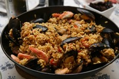

Chinese Cuisine
Welcome to the hub of Chinese cuisine. If you are here, then you are interested in knowing more about Chinese cuisine. On this page we will dive into a small synopsis of everything Chinese cuisine. Chinese cuisine has been eaten by billions of people around the world. And many do not even need to go far from their homes to get delicious Chinese food. Chinese restaurants can be found in all areas of the world.
Chinese dishes can be prepared differently depending on what region of China you may be in. But in general, the main ingredients of most chinese dishes involve vegetables, meat and grains.
The links shown below will take you to sites that go more in-depth about Chinese cuisine. These sites will tell you about Chinese cuisine, some of the most popular Chinese restaurants in China and also some interesting facts pertaining to everything Chinese cuisine.
To Learn More Follow these links:
| Chinese Recipes | Chinese Restaurants | Chinese Food Facts |
|---|---|---|
| Allrecipes.com-Chinese | Black Sesame Kitchen | Factonia.com |
| Chineserecipes.com | Bai Jiao Yuan | Travelchinaguide.com |
| Traditional Chinese Recipes | Qing Wang Fu | ibiblio.org |
| Chinese-foodrecipes.net | One Dim Sum Chinese Restaurant | Chinese Food History |
| Menu | ||
|---|---|---|
| Russian | Chinese | Spanish |
 |  | |